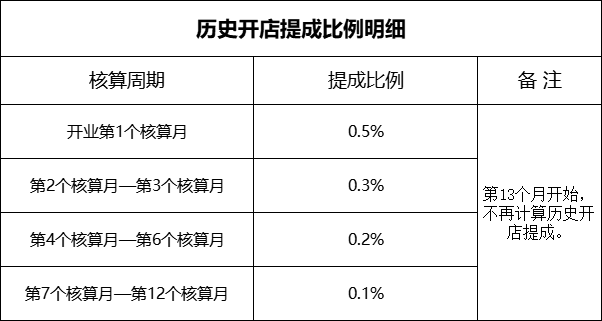

2026年市场开发部历史开店提成方案2.0
一、方案目的：
为了构建长效激励机制，紧密绑定开发员与所开门店的关系。激励开发员在前期积极找好铺、开好店，充分发挥主观能动性，深入调研市场，精准选址布局。更为了激发开发员的责任心与积极性，推动公司整体业务稳健发展，实现员工物心双幸福，特制定此方案。
二、历史开店提成核算周期和提成比例：

三、相关说明和要求：
1、历史开店提成=当月实际配货额×提成比例
举例：某店第1个核算月实际配货额为50000元，则该店当月产生的历史开店提成为50000*0.5%=250元。
2、配送额包含所有进货，但需要剔除退货金额。
3、历史开店提成每个核算月核算一次，时间核算方式是按照开业日直接往后推当月天数，发放日为每月15日。
4、提成受益人为总部系统中登记的开发人员，一店一人。
5、发生迁址的门店，历史开店提成的受益人随即变更为新址的开发人员。
6、此方案生效日之前的历史门店自2026年01月01日起以门店真实开业时间为标准按照方案中的核算周期计算。
本方案自2026年01月01日生效，试行三个月，到期如无调整则继续延用。中途如果因特殊原因闭店、造成恶劣影响的，公司有权收回相应提成，并保留追究相应责任的权利。
市场开发部
2025年12月10日